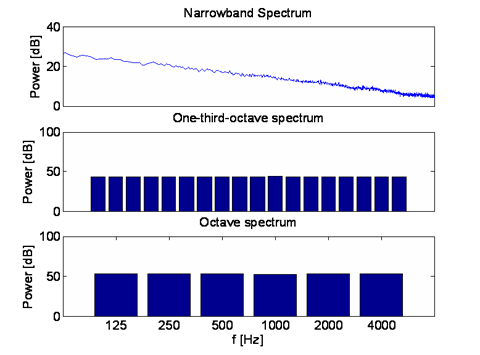
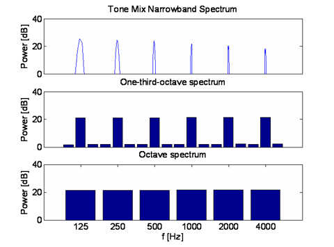

Noise and Tone Demos
Below are two sounds with the same octave band spectra, but differing 1/3 octave and narrowband spectra.This shows how comparing sounds by their octave band spectra can be deceiving
Click the figures below to hear the sound that created each spectrum
Pink Noise Spectra |
Tonal Noise Spectra |
|  |
 |
Below are three types of noise: white, pink, and brown. Click on the noise name to hear a sample of the noise
| White noise has a flat narrowband spectrum but a octave and 1/3 octave band spectrum that rises 3 dB/octave. This sounds quite hissy |
| Pink noise (aka 1/f noise) has a narroband spectrum that drops 3 dB/octave and a flat octave and 1/3 octave band spectrum. This has less hiss and more roary. |
| Brown noise (aka 1/f2 noise) has a narrowband spectrum that drops by 6 dB/octave and an band spectrum that drops at 3 dB/oct. This is very roary. Because of the low frequency content it sounds quieter than the white and pink noise despite being of higher maximum amplitude. |
These noises and plots were created using MATLAB. Random noise was generated to create the white noise source and the white noise was filtered to obtain pink and brown noise. The 1/3 and octave band spectra were obtained using the octave filter toolbox available from the MATLAB File Exchange
Files were converted from .wav to high quality variable bitrate MP3 because of limited space on the web server.

|
These animations, auralizations, and visualizations are © 2006 by
Ralph T. Muehleisen and are licenced under a
Creative Commons Attribution-NonCommercial 2.5 License.
|